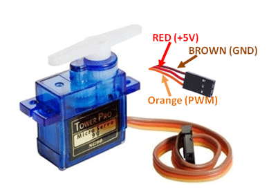
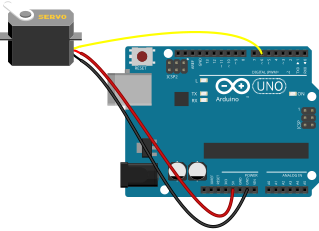

Servo Motor
सर्वो मोटर
A motor that rotates to a precise angle (usually 0°–180°), used in robot arms, gates, and camera mounts.
What it does · के गर्छ
A motor that rotates to a precise angle (usually 0°–180°), used in robot arms, gates, and camera mounts.
Pins on the component · कम्पोनेन्टका पिन
| Pin | Type | Role |
|---|---|---|
| Signal (orange/yellow) | PWM signal | Angle command |
| VCC (red) | Power | 5 V supply |
| GND (brown/black) | Ground | Common ground with Uno |
Connect to Arduino Uno · UNO मा जडान
Example wiring (you may use other pins if you update the code). See Uno pinout.

Arduino code you need · आवश्यक कोड
Example use case · उदाहरण
Sweep 0° to 180° — Move a robot arm back and forth smoothly.
#include <Servo.h>
Servo myServo;
void setup() {
myServo.attach(6);
}
void loop() {
myServo.write(0);
delay(500);
myServo.write(180);
delay(500);
}